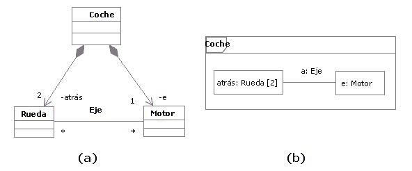
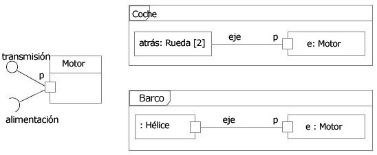
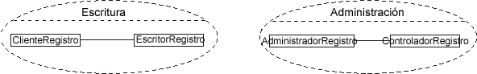
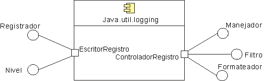
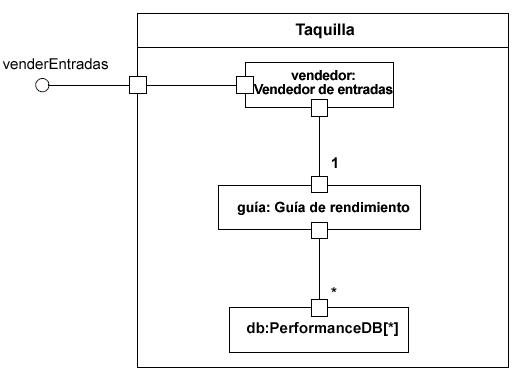

| Concepto: Clase estructurada |
 |
|
| Elementos relacionados |
|---|
DefiniciónSegún UML ([UML04]), una clase es un subtipo de clasificador encapsulado y metaclase a la vez, lo que proporciona a una clase la capacidad de tener una estructura interna y puertos. UML también define los componentes como un subtipo de clase. Por lo tanto, en el contexto de RUP, tanto los componentes como las clases se consideran clases estructuradas. ComponenteUna instancia de una clase estructurada contiene un objeto o un conjunto de objetos correspondientes a cada parte. Todas estas instancias se destruyen cuando se destruye la instancia de clase estructurada que las contiene. El ejemplo de abajo muestra dos vistas posibles de la clase Coche:
 Ejemplo: Componentes que desempeñan su rol en una clase estructurada ConectorUn conector es una instancia de relación entre dos componentes de una clase estructurada. Es un enlace que permite la comunicación. Los conectores se pueden implementar mediante asociaciones ordinarias o relaciones transitorias, como parámetros del procedimiento, variables, valores globales u otros mecanismos. El "cableado" interno de una clase estructurada se especifica con los conectores de ensamblaje y los conectores de delegación:
PuertoUn puerto es una característica estructural de una clase estructurada. La encapsulación se puede aumentar forzando las comunicaciones desde fuera de la clase estructurada para que pasen a través de los puertos que obedecen a las interfaces declaradas, lo que otorga una precisión adicional en la especificación y la interconexión para dicha clase estructurada. Las interfaces necesarias y proporcionadas de un puerto especifican todo lo necesario para las interacciones mediante el punto de interacción. Si se alcanzan todas las interacciones de una clase estructurada con su entorno a través de los puertos, las cualidades esenciales de la clase estructurada se aíslan totalmente del entorno. Esto permite que una clase estructurada de este tipo se utilice en cualquier contexto que cumpla las restricciones que especifican sus puertos. No se presupone nada sobre el modo de implementación de un puerto. Se puede implementar como un objeto explícito o puede ser simplemente un concepto virtual que no aparece explícitamente en la implementación. A continuación, se proporcionan ejemplos de puertos: Ejemplo 1 Puerto de un motor que se utiliza en un coche y en un barco La figura de arriba muestra una clase Motor con un puerto p y dos interfaces:
En el puerto p, la clase Motor está totalmente encapsulada; se puede especificar sin
ningún conocimiento del entorno en que se integrará el motor. Mientras el entorno obedezca las restricciones que
expresan las interfaces proporcionadas y necesarias del motor, el motor funcionará correctamente.
Mientras la interacción entre el Motor y el componente enlazado con su puerto p cumpla las restricciones que especifican las interfaces necesarias y proporcionadas, el motor funcionará tal como se especifica, independientemente de si se trata del motor de un coche o del motor de un barco. Además, aunque el Motor tuviese otros puertos declarados, como un puerto f para el Consumo de combustible, las ruedas de un coche y la hélice de un barco seguirían accediendo al Motor a través del puerto p. El puerto f sería interesante para un medidor de combustible, independientemente de la clase de combustible que se utilizase y la clase de medidor de combustible que puedan tener los coches y los barcos. Ejemplo 2Este ejemplo de puertos se basa en la API de registro con Java ([JAV03]), que es un paquete que proporciona las siguientes clases e interfaces de los recursos centrales de registro de la plataforma Java 2, entre otras:
Estas clases e interfaces están involucradas en dos tipos importantes de colaboraciones. Algunas clases e interfaces se utilizan para escribir en el registro y otras se utilizan para administrarlo. La figura de abajo muestra dos colaboraciones diferentes que los clientes y los administradores tienen con el registro, modeladas como colaboraciones UML:
 Diferentes colaboraciones que tienen los clientes y los administradores con el registro Una posible representación UML 2.0 para modelar los servicios de registro y sus colaboraciones sería utilizar un componente con puertos e interfaces declaradas, como se muestra en la figura de abajo:  Paquete de la API de registro con Java que se está implementando como un componente con las interfaces proporcionadas agrupadas en puertos En la especificación API de registro con Java, algunos de los servicios de registro se implementaron como clases y otros como interfaces. En este ejemplo, modelamos estos servicios como interfaces proporcionadas, que se podrían realizar por partes en el componente. Las dos clases diferentes de comportamiento relacionadas con las colaboraciones de escritura y administración que se mencionan más arriba podrían representarse mediante interfaces agrupadas lógicamente en puertos. Por lo tanto, tenemos:
Esta alternativa de modelado supone una separación de asuntos, ya que agrupa lógicamente las interfaces en puertos diferentes. Esto nos proporciona una precisión adicional para la especificación del componente y la interconexión que pueda tener con el mundo externo. ModeladoDurante el diseño, las clases y los componentes se pueden descomponer en recopilaciones de componentes conectados que, a su vez, se pueden a descomponer. Un diagrama de estructura compuesta se puede utilizar para mostrar la descomposición de una clase estructurada. A modo de ejemplo, la figura de abajo muestra un diagrama de estructura compuesta para la taquilla del sistema de entradas. Esta clase se descompone en tres partes:
Cada parte interactúa mediante una interfaz bien definida que especifican los puertos. La taquilla entera interactúa con el exterior a través de un puerto. Los mensajes de este puerto se envían a la clase de vendedor de entradas, pero la estructura interna de la clase de taquilla se oculta de los clientes externo.  Ejemplo: Diagrama de estructura compuesta para un sistema de entradas. Representación UML 1.xTenga en cuenta que una clase estructurada es un concepto nuevo en UML 2.0. Gran parte de lo que RUP define como Cápsula se puede representar utilizando una clase estructurada como notación (consulte los apartados Producto de trabajo: Cápsula y Directriz de producto de trabajo: Cápsula para obtener más información sobre este tema).Si su herramienta sólo soporta UML 1.5, en los apartados Producto de trabajo: Cápsula y Directriz de producto de trabajo: Cápsula se describe una representación alternativa.
Consulte Diferencias entre UML 1.x y UML 2.0 para obtener más información. |
© Copyright IBM Corp. 1987, 2006. Reservados todos los derechos. |